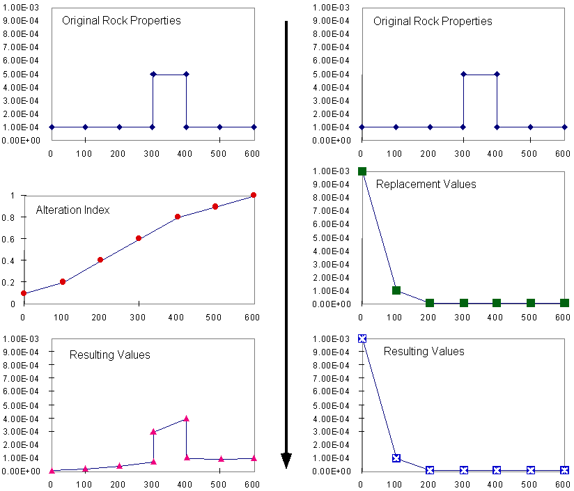

Alteration zones
Alteration zones can be created around a number of the structural features (faults, shear zones, plugs, dykes and unconformities), and are defined as either alteration haloes, where the pre-existing rock property values are enhanced or depleted, or as replacement zones, where the original rock property values ar replaced without regard for the original values. In either case the alteration profile varies as a function of distance from the structural feature, using a standard profile definition window, and where appropriate can be defined as occuring above and/or below the defining surface. Beyond the Alteration Distance, the rocks simply maintain their original values.
Alteration Haloes
Rock properties in these zones are defined by the product of the original rock property value and the alteration index. This index is defined as a function of distance using the alteration profile window, with the Properties value set to Line or Curve. The specific geophysical rock property profile being defined is selected from the Current Graph menu list, and the Options window supplies specific scaling parameters.

Replacement Zones
Rock properties in these zones are defined only by the alteration value. This value is defined as a step function as a function of distance using the alteration profile window, with the Properties value set to Square
Comparing Alteration vs Replacement Behaviour
As an example of how alteration haloes behave as compared to replacement zones, the post alteration susceptibility values for these two modes are compared in table and graph form with the alteration profile values and the original susceptibility as a function of distance away from a dyke, with an Alteration Distance set to 600m.
| Distance to Fault | Original Susceptibility | Alteration Halo Index | Resulting Susceptibility | Replacement Index | Resulting Susceptibility |
| 0 | 1.0e-4 | 0.1 | 1.0e-5 | 1.0e-3 | 1.0e-3 |
| 100 | 1.0e-4 | 0.2 | 2.0e-5 | 1.0e-4 | 1.0e-4 |
| 200 | 1.0e-4 | 0.4 | 4.0e-5 | 1.0e-5 | 1.0e-5 |
| 300 | 5.0e-4 | 0.6 | 3.0e-4 | 1.0e-5 | 1.0e-5 |
| 400 | 5.0e-4 | 0.8 | 4.0e-4 | 1.0e-5 | 1.0e-5 |
| 500 | 1.0e-4 | 0.9 | 9.0e-5 | 1.0e-5 | 1.0e-5 |
| 600 | 1.0e-4 | 1.0 | 1.0e-4 | 1.0e-5 | 1.0e-5 |
| 601 | 1.0e-4 | undefined | 1.0e-4 | undefined | 1.0e-4 |
Alteration effects as a function of distance from fault

In order to turn on or off anisotropic susceptibility and remanence within an alteration zone a simple on-off control is required. The behaviour of the profile window for the Anisotropy and Remanence settings is simply to turn these types of behaviour on (non zero Y axis values) or off (zero Y axis values), and the easiest way to set these parameters is with the square profile option. The underlying colour of the profile changes to green when these controlling settings are turned on, and this colouration remains for all parameters that depend on the controlling profile.
| GROUP | NAME | FUNCTION |
|---|---|---|
| Properties | Line | Alteration Halo profile defined by straight line segments |
| Curve | Alteration Halo profile defined by Bezier Curve | |
| Square | Replacement Zone profile defined by step function | |
| Current Graph | Currently selected rock property for profile definition | |
| Delete Point | Delete currently selected point from profile | |
| Delete All | Revert Profile back to default settings | |
| Options... | Scaling Options for profile | |
| Options | Min Scaling | Minimum Y axis value for alteration haloes |
| Max Scaling | Maximum Y axis value for alteration haloes | |
| Min Replacement | Minimum Y axis value for replacement zones | |
| Max Replacement | Maximum Y axis value for replacement zones | |
| Alteration Distance | X axis distance on profile (distance beyond which alterations of either type have no effect) |
Noddy · open source under the MIT licence · Loop3D/noddy_qt